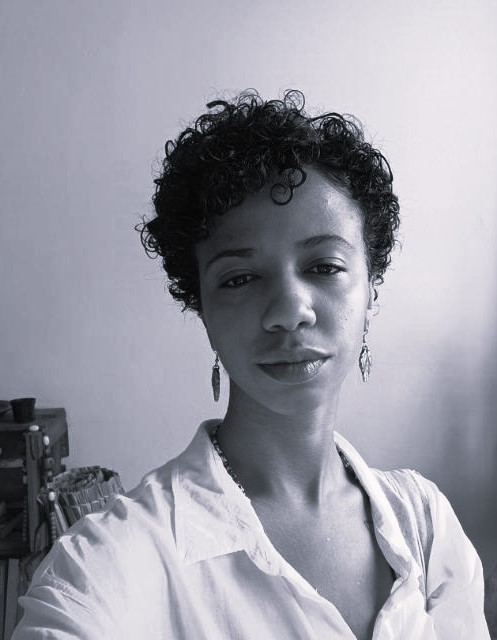

Thais Matos
Geógrafa e Desenvolvedora
Pesquisadora e professora de Geografia, mestranda em ordenamento territorial e ambiental pelo
Programa de Pós Graduação em Geografia da Universidade Federal Fluminense e bolsista no programa
Mestrado nota 10 da FAPERJ. No momento, está expandindo suas possibilidades profissionais buscando
formações em tecnologia, especificamente na area de programação.